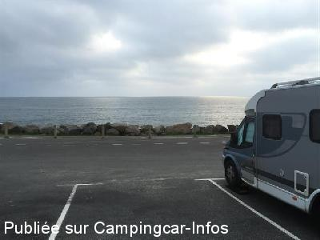
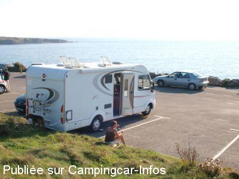
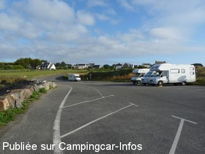

APCC = parkings réservés camping-cars sans services de :
NÉVEZ Raguénez
(N° 402)
Accès/adresse :
Rue des Iles
Raguénez
29920 NÉVEZ
Raguénez
29920 NÉVEZ
Latitude : (Nord) 47.78886° Décimaux ou 47° 47′ 19′′
Longitude : (Ouest) -3.8014° Décimaux ou -3° 48′ 5′′
Tarif : Gratuit
Services :
Autres informations :
10 emplacements en pente
Stationnement limité 24 h

Le 31/10/2014 par Snoopy

Le 03/11/2011 par bernie

Le 05/08/2009 par JMC
de
verel
le 27/03/2015 :
une autre aire proche d'une jolie plage à NEVEZ (plage de Tahiti) très calme.
une autre aire proche d'une jolie plage à NEVEZ (plage de Tahiti) très calme.
de
bernie
le 03/11/2011 :
Prévoir des cales, car parking en pente! La sortie du restaurant est à considérer selon la civilité (et la sobriété?) des conducteurs qui passeront devant le parking... entre les adeptes du pied lourd, les as de l'avertisseur et les discrets, tout est possible... Coucher de soleil superbe, nuit calme, maréchaussée vigilante et sympathique.
Prévoir des cales, car parking en pente! La sortie du restaurant est à considérer selon la civilité (et la sobriété?) des conducteurs qui passeront devant le parking... entre les adeptes du pied lourd, les as de l'avertisseur et les discrets, tout est possible... Coucher de soleil superbe, nuit calme, maréchaussée vigilante et sympathique.
de
bopa76
le 05/05/2011 :
28/05/2011 une dizaine d emplacements legerement en pente face a la mer merci la commune car presque tout les parkings on des emplacements camping car
28/05/2011 une dizaine d emplacements legerement en pente face a la mer merci la commune car presque tout les parkings on des emplacements camping car
de
JMC
le 05/08/2009 :
Prévoir des cales. Attention! Passages fréquents de la maréchaussée qui demande de respecter les emplacements. L'utilisation d'autres places (pas de panneaux d'interdiction) gène la vue des clients de l'hôtel installé en dessus.
Prévoir des cales. Attention! Passages fréquents de la maréchaussée qui demande de respecter les emplacements. L'utilisation d'autres places (pas de panneaux d'interdiction) gène la vue des clients de l'hôtel installé en dessus.
de
Derek Uzzell (GB)
le 19/03/2001 :
Un deuxième parking. Aucune plage, mais belle vue de la mer et les rochers.
Un deuxième parking. Aucune plage, mais belle vue de la mer et les rochers.